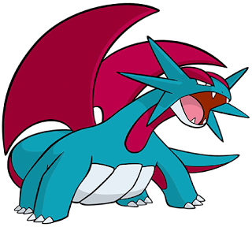
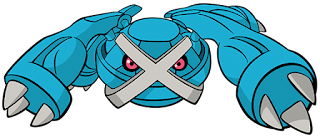
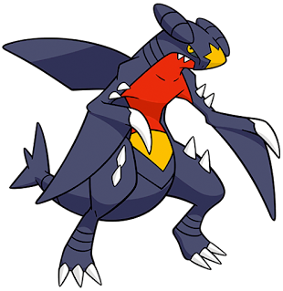
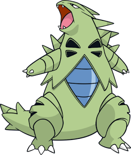
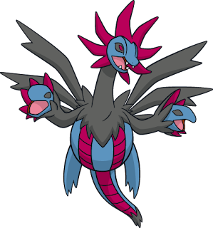
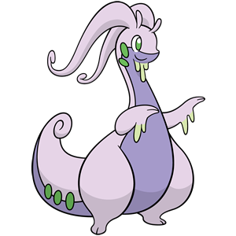
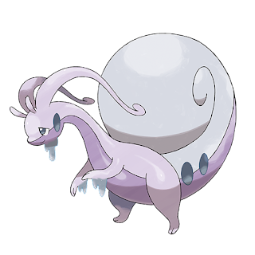
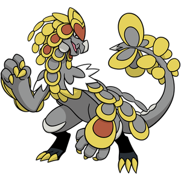
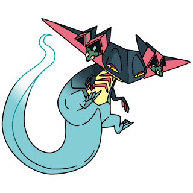

.png)
.png)
O primeiro dos pseudolendários, Dragonite possui os Stats mais equilibrados dentro os outros da categoria e um Attack acima da média.

Apesar de ser do mesmo tipo que Dragonite, o conjunto de Salamence é totalmente ofensivo, ou seja, Atk, Sp. Atk e Speed altos e baixo poder defensivo. É o menor dos pseudolendários com 1,5m de altura.

Esse é o pseudolendário diferentão: é o único que não é baseado em um animal, já que ele é claramente uma criatura robótica (não possui gênero); é o único que não aprende nenhum golpe tipo Dragão; é o único que o seu nome americano é igual ao japonês; é o único que possui Catch Rate 3, em comparação com 45 dos outros da categoria; é o mais pesado dos pseudolendários (550 kg). Os Stats de Metagross são semelhantes a Tyranitar: baixa Speed, alto poder ofensivo (Attack) e com a maior Def dos pseudolendários.

Focado em versatilidade, Garchomp possui uma alta Speed, HP e Attack, além de uma grande variedade de golpes a disposição. O tipo Ground dá ajuda com algumas resistências e imunidade a Electric, apesar da dupla fraqueza ao tipo Ice. É o único dos pseudolendários que possui diferenças de gênero (estrutura nas costas é cortada no macho), além de contar com o maior HP base e o menor Sp. Atk base.

Um verdadeiro tanque de guerra com poder e durabilidade, Tyranitar sacrifica a Speed por Attack e resistência (HP, Def e Sp. Def). Para complementar o conjunto, sua habilidade Sand Stream traz uma sandstorm que aumenta Sp. Def de Pokémon tipo Pedra. É o único pseudolendário que não é o Pokémon principal de algum treinador importante (Elite Four/Gym Leader/Boss/Rival).

Possui Stats equilibrados, assim como Dragonite. A diferença é que Hydreigon possui o maior Sp. Atk base dentre os pseudolendários e é o único que não possui nenhum dos Stats abaixo de 90. Além disso, Hydreigon e suas formas anteriores são os únicos pseudolendários que não possuem Hidden Ability.
 
É o pseudolendário com a maior Sp. Def, contando com Atk e Sp. Atk similares. O Kalosian Goodra é único pseudolendário de tipo único e possui as menores Def e Atk base. O Hisuian Goodra ganha um bônus de Def, ao custo de se tornar o pseudolendário com menor Speed base. O ponto em comum entre as duas formas regionais é que ambos precisam evoluir ganhando nível durante um clima de chuva.

Completa o trio dos pseudolendários com Stats equilibrados, sendo ligeiramente mais defensivo do que ofensivo. Apesar do menor HP base dos pseudolendários, possui altas Def e Sp. Def. Kommo-o é o único que possui um Z-Move exclusivo.

Dragapult é um pseudolendário extremamente rápido com uma Speed base disparada, além de Atk e Sp. Atk altos. É o mais frágil dos pseudolendários, o mais alto (3 m) e o mais leve (50 kg).